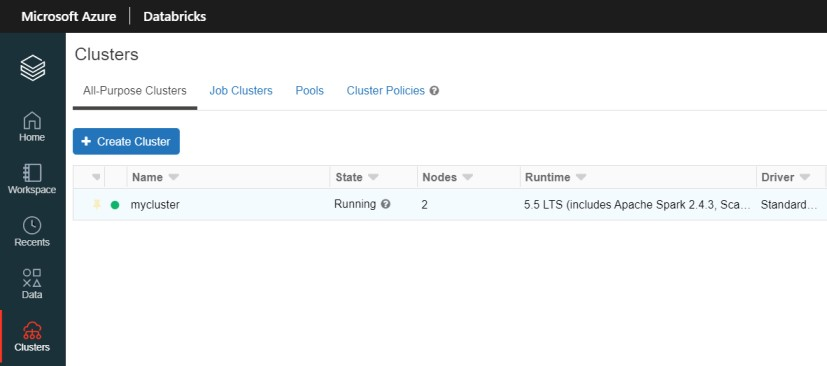
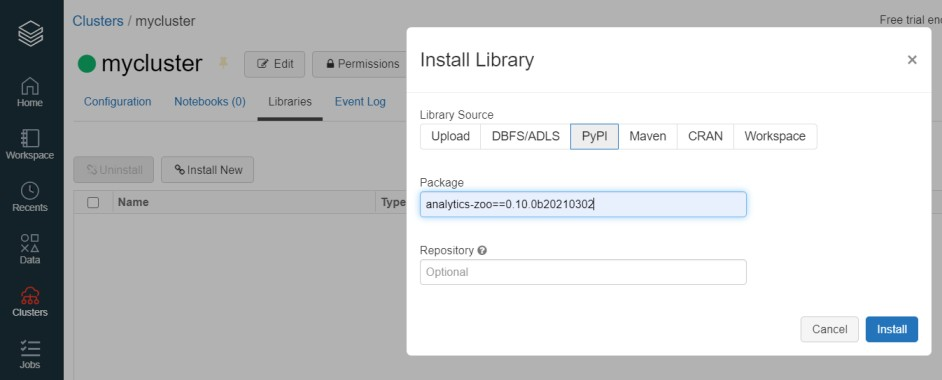
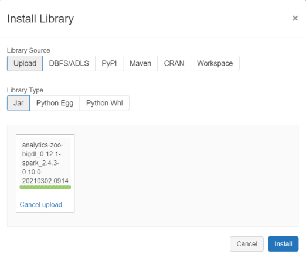
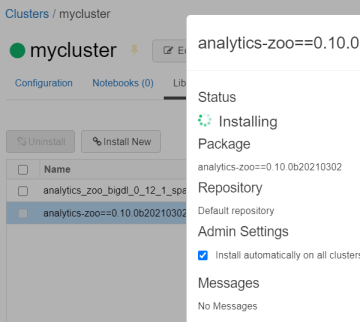
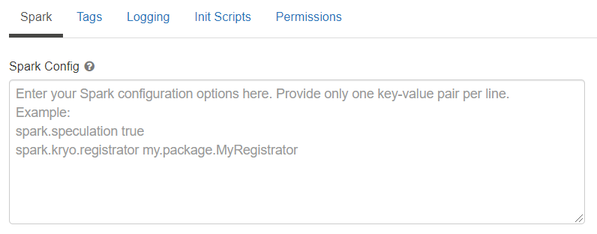
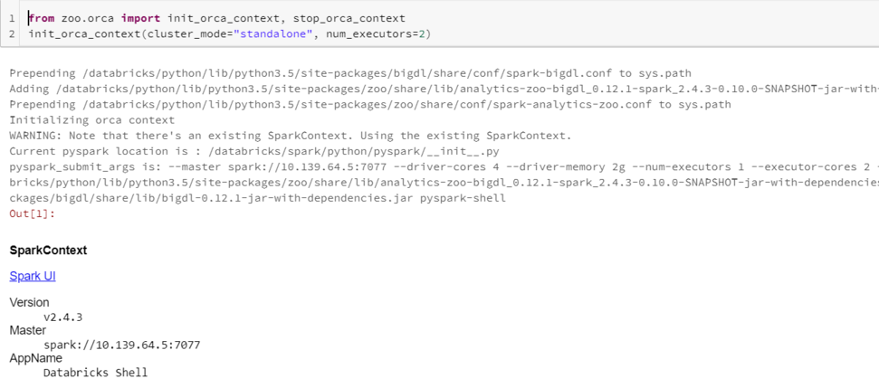

Databricks User Guide¶
You can run Analytics Zoo program on the Databricks cluster as follows.
1. Create a Databricks Cluster¶
- Create either AWS Databricks workspace or Azure Databricks workspace.
- Create a Databricks clusters using the UI. Choose Databricks runtime version. This guide is tested on Runtime 5.5 LTS (includes Apache Spark 2.4.3, Scala 2.11).
2. Installing Analytics Zoo libraries¶
In the left pane, click Clusters and select your cluster.

Install Analytics Zoo python environment using PyPI. Click Libraries > Install New > PyPI. Install official released version by texting “analytics-zoo” library. Or install latest nightly build of Analytics Zoo with the specified version.

Install Analytics Zoo prebuilt jar package. Click Libraries > Install New > Upload > Jar. Download Analytics Zoo prebuilt package from Release Page. Please note that you should choose the same spark version of package as your Databricks runtime version. Unzip it. Find jar named “analytics-zoo-bigdl_-spark_-jar-with-dependencies.jar” in the lib directory. Drop the jar on Databricks.

Make sure the jar file and analytics-zoo (with PyPI) are installed on all clusters. In Libraries tab of your cluster, check installed libraries and click “Install automatically on all clusters” option in Admin Settings.

3. Setting Spark configuration¶
On the cluster configuration page, click the Advanced Options toggle. Click the Spark tab. You can provide custom Spark configuration properties in a cluster configuration. Please set it according to your cluster resource and program needs.

See below for an example of Spark config setting needed by Analytics Zoo. Here it sets 1 core per executor. Note that “spark.cores.max” needs to be properly set below.
spark.shuffle.reduceLocality.enabled false
spark.serializer org.apache.spark.serializer.JavaSerializer
spark.shuffle.blockTransferService nio
spark.databricks.delta.preview.enabled true
spark.executor.cores 1
spark.speculation false
spark.scheduler.minRegisteredResourcesRatio 1.0
spark.cores.max 4
4. Running Analytics Zoo on Databricks¶
Open a new notebook, and call init_orca_context at the beginning of your code (with cluster_mode set to “standalone”).
from zoo.orca import init_orca_context, stop_orca_context
init_orca_context(cluster_mode="standalone", num_executors=2)
Output on Databricks:
